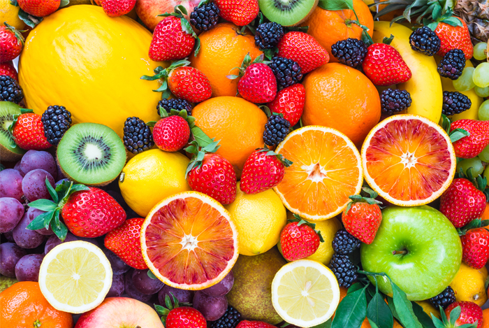

Makanan apa saja yang termasuk dalam Kelompok Buah?
Setiap buah atau jus buah 100% dihitung sebagai bagian dari Kelompok Buah. Buah-buahan mungkin segar, kalengan, beku, atau kering, dan mungkin utuh, dipotong-potong, dihaluskan, atau dimasak. Setidaknya setengah dari jumlah buah yang disarankan harus berasal dari buah utuh, bukan 100% jus buah.

Mengapa penting makan buah?
Makan buah memberikan manfaat kesehatan - orang yang makan lebih banyak buah dan sayuran sebagai bagian dari diet sehat secara keseluruhan cenderung memiliki penurunan risiko beberapa penyakit kronis. Buah-buahan memberikan nutrisi penting untuk kesehatan dan pemeliharaan tubuh Anda.
Berapa banyak buah yang dibutuhkan setiap hari?
Jumlah buah yang perlu Anda makan tergantung pada usia, jenis kelamin, tinggi badan, berat badan, dan tingkat aktivitas fisik Anda.
Apa yang dianggap sebagai secangkir buah?
Secara umum, 1 cangkir buah atau 100% jus buah, atau cangkir buah kering dapat dianggap sebagai 1 cangkir dari Kelompok Buah.